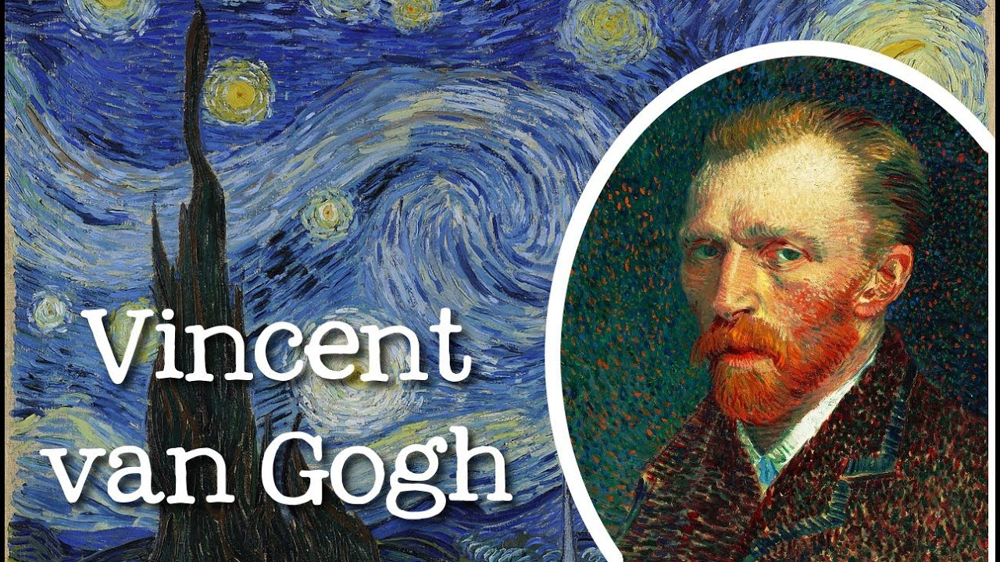

“There is nothing more truly artistic than to love people.”

Biography
Vincent van Gogh, in full Vincent Willem van Gogh, (born March 30, 1853, Zundert, Netherlands—died July 29, 1890, Auvers-sur-Oise, near Paris, France), Dutch painter, generally considered the greatest after Rembrandt van Rijn, and one of the greatest of the Post-Impressionists. Van Gogh, the eldest of six children of a Protestant pastor, was born and reared in a small village in the Brabant region of the southern Netherlands. He was a quiet, self-contained youth, spending his free time wandering the countryside to observe nature. Van Gogh’s art became astoundingly popular after his death, especially in the late 20th century, when his work sold for record-breaking sums at auctions around the world and was featured in blockbuster touring exhibitions. In part because of his extensive published letters, van Gogh has also been mythologized in the popular imagination as the quintessential tortured artist.